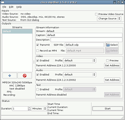
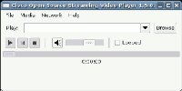

mpeg4ip
Archivierte Anleitung
Dieser Artikel wurde archiviert, da er - oder Teile daraus - nur noch unter einer älteren Ubuntu-Version nutzbar ist. Diese Anleitung wird vom Wiki-Team weder auf Richtigkeit überprüft noch anderweitig gepflegt. Zusätzlich wurde der Artikel für weitere Änderungen gesperrt.
Zum Verständnis dieses Artikels sind folgende Seiten hilfreich:
MPEG4IP  ist ein von Cisco initiiertes Projekt, mit dem die Entwicklung standardisierter Streaminganwendungen gefördert werden soll. Es wird eine komplette Lösung zum Streamen und zur Wiedergabe von Live-Inhalten bereitgestellt, die Entwicklern als Referenzimplementierung zur Verfügung steht.
ist ein von Cisco initiiertes Projekt, mit dem die Entwicklung standardisierter Streaminganwendungen gefördert werden soll. Es wird eine komplette Lösung zum Streamen und zur Wiedergabe von Live-Inhalten bereitgestellt, die Entwicklern als Referenzimplementierung zur Verfügung steht.
Die wichtigsten Anwendungen in dem Softwarepaket sind:
mp4live - ein Capturing und Encoding-Tool, mit dem Live-Inhalte in Echtzeit codiert und als Videodatenstrom über das Netzwerk verteilt werden können
gmp4player - ein streamingfähiger Videoplayer mit Debugging-Funktionen
mp4creator - ein Kommandozeilentool mit einer Fülle von Funktionen für die Erstellung und Bearbeitung von MPEG-4 Dateien
|  |  |
| mp4live | gmp4player |
Darüberhinaus werden ein Reihe weiterer Programme für die Bearbeitung und die Analyse von Videodaten bereitgestellt (siehe Abschnitt "Anwendungen").
In Verbindung mit dem Darwin Streaming Server, der sich hervorragend mit MPEG4IP ergänzt, lässt sich ein vollständiges, auf offenen Standards basierendes System für das Streamen von Live- und On-Demand Inhalten realisieren.
Paketinstallation¶
Neben den unter [5] aufgeführten Paketen, werden für die Installation/Kompilierung von MPEG4IP die nachfolgend aufgeführten Pakete [1] benötigt.
Hinweis:
Wer das Paket libmp4v2-0 bereits installiert hat, sollte dies unbedingt entfernen, da es zu Inkompatibilitäten führt und MPEG4IP sich dadurch nicht sauber kompilieren lässt.
Entwicklungstools¶
libtool
cvs - nur bei Installation aus CVS von Sourceforge (s.u.)
automake1.9 - nur bei Installation aus CVS
Paketliste zum Kopieren:
sudo apt-get install libtool cvs automake1.9
sudo aptitude install libtool cvs automake1.9
Audio/Video-Codecs¶
libavformat-dev (universe) - FFmpeg-Codecs
libxvidcore4-dev (multiverse) - MPEG4 Video-Codec
libx264-dev (multiverse) - H264/AVC Video-Codec
liblame-dev (multiverse) - MP3 Audio-Codec
libfaac-dev (multiverse) - AAC Audio-Codec
libmpeg2-4-dev (universe) - MPEG1/2 Video-Decoder
liba52-0.7.4-dev (universe) - AC3 Audio-Decoder
libid3-3.8.3-dev - ID3-Tag Verarbeitung
Paketliste zum Kopieren:
sudo apt-get install libavformat-dev libxvidcore4-dev libx264-dev liblame-dev libfaac-dev libmpeg2-4-dev liba52-0.7.4-dev libid3-3.8.3-dev
sudo aptitude install libavformat-dev libxvidcore4-dev libx264-dev liblame-dev libfaac-dev libmpeg2-4-dev liba52-0.7.4-dev libid3-3.8.3-dev
Sonstige Bibliotheken/Pakete¶
libgnomeui-dev
libsdl1.2-dev
libsdl1.2debian-all
Paketliste zum Kopieren:
sudo apt-get install libgnomeui-dev libsdl1.2-dev libsdl1.2debian-all
sudo aptitude install libgnomeui-dev libsdl1.2-dev libsdl1.2debian-all
MPEG4IP¶
Quellcode herunterladen¶
MPEG4IP ist weder in den Ubuntu-Paketquellen vorhanden, noch als einzelnes deb-Paket für Ubuntu verfügbar, die Software muss deshalb unter Verwendung des Quellcodes installiert werden [5].
Dapper Drake 6.06 LTS¶
Unter Dapper kann der MPEG4IP-Quellcode (Version 1.5.0.1) einfach als .tar.gz-File von der Downloadseite heruntergeladen und im Homeverzeichnis entpackt werden.
Edgy Eft 6.10¶
Hinweis:
Die Installation unter Edgy ist noch nicht getestet.
Am 18.07.2006 hat sich die API  der x264-Bibliothek geändert. Unter Edgy ist diese Änderung in dem Paket libx264-dev bereits enthalten, während sie in dem Downloadfile von MPEG4IP (v1.5.0.1) noch nicht berücksichtigt ist. Um diesen Konflikt zu lösen, gibt es mehrere Möglichkeiten:
der x264-Bibliothek geändert. Unter Edgy ist diese Änderung in dem Paket libx264-dev bereits enthalten, während sie in dem Downloadfile von MPEG4IP (v1.5.0.1) noch nicht berücksichtigt ist. Um diesen Konflikt zu lösen, gibt es mehrere Möglichkeiten:
Wer auf den H.264-Codec verzichten kann, sollte einfach das Paket libx264-dev wieder deinstallieren und kann dann, wie unter Dapper beschrieben, den Quellcode von der MPEG4IP-Downloadseite verwenden.
Ansonsten besteht die Möglichkeit, den aktuellen Quellcode von MPEG4IP via CVS herunterzuladen, da in diesem Code die Änderung schon enthalten ist. Um sich in das CVS-System als anonymer Nutzer einzuloggen, wird in einem Terminal [3] der Befehl
cvs -d:pserver:anonymous@mpeg4ip.cvs.sourceforge.net:/cvsroot/mpeg4ip login
eingegeben und die darauf folgende Passwortabfrage mit ⏎ beantwortet.
Der Quellcode wird dann mit dem Befehl
cvs -z3 -d:pserver:anonymous@mpeg4ip.cvs.sourceforge.net:/cvsroot/mpeg4ip co -P mpeg4ip
heruntergeladen (vgl. Anonymous CVS Access )
Anstatt den Quellcode via CVS herunterzuladen, ist es ggf. auch möglich, den H.264-Codec aus der ffmpeg-Bibliothek zu nutzen. Dazu ist es notwendig, den ffmpeg-Code aus den Ubuntu-Quellen herunterzuladen und mittels dpkg-buildpackage zu installieren.
Quellcode kompilieren und installieren¶
Wenn der Quellcode heruntergeladen ist, wird ein Terminal [3] geöffnet, in das Verzeichnis ~/mpeg4ip* gewechselt und dort der folgende Befehl eingegeben:
./bootstrap --enable-ffmpeg=/usr/include/ffmpeg
Dem bootstrap-Befehl können außerdem die Optionen --disable-server oder --disable-player angehängt werden. Damit können wahlweise die Erstellung der Encodersoftware bzw. der Playersoftware unterdrückt werden. Ohne diese Optionen wird das gesamte Softwarepaket erstellt.
Der Aufruf des bootstrap-Befehls sollte mit folgender Ausgabe enden (sofern nicht die Option --disable-server angegeben wurde):
Mp4live encoder report:
ffmpeg encoder is installed
xvid encoder is installed
x264 encoder is installed
lame encoder is installed
faac encoder is installed
ready to makeAls nächstes werden zunächst einige Headerfiles verschoben
sudo mkdir /usr/local/include sudo cp mpeg4ip_config.h /usr/local/include sudo cp include/mpeg4ip.h include/mpeg4ip_version.h /usr/local/include
und anschließend der configure-Befehl [5] aufgerufen:
./configure
Jetzt muss man das Makefile ~/mpeg4ip*/lib/mp4v2/Makefile anpassen. Man öffnet es dazu in einem Editor, sucht die Zeile
SUBDIRS = . test util
und ändert diese in
SUBDIRS = .
Danach wird die Erstellung der Software ganz normal wie unter [5] beschrieben fortgeführt.
Anwendungen¶
Wenn die Installation abgeschlossen ist, können die Anwendungen und Tools über den Programmnamen in einem Terminal [3] gestartet werden. Einträge im Startmenü müssen ggf. manuell erstellt werden.
Sofern das komplette Paket installiert wurde, stehen die nachfolgend aufgeführten Anwendungen und Tools zur Verfügung:
Hauptanwendungen¶
mp4live - Live-Encoder und Broadcaster mit GUI
mp4creator - Offline-Encoder und MP4-Bearbeitungstool
mp4player - Playersoftware (Kommandozeilen-Version)
gmp4player - Playersoftware (GUI-Version)
Tools zum MP4-Dateiformat¶
mp4info - zeigt Track-Informationen in MP4-Dateien
mp4dump - zeigt den Inhalt von MP4-Dateien
mp4trackdump - zeigt Track-Informationen in MP4-Dateien
mp4tags - Setzt iTunes Tag-Informationen
mp4art - Extrahiert iTunes Cover Art
mp4videoinfo - Zeigt Information über Video Tracks in MP4-Dateien
Encoding Tools¶
lboxcrop - Vertikales Beschneiden von rohen Videodaten
rgb2yuv - Konvertierung RGB nach YUV
avi2raw - Zeigt Elementarströme in AVI-Dateien
Debugging Tools¶
yuvdump - Zeigt rohe YUV Dateien
avidump - Zeigt Informationen über AVI-Dateien
mpeg4vol - Decodiert ein MP4-Volume oder eine MP4-Datei über die Kommandozeile
mpeg2video_parse - Zeigt Frame-Informationen von MPEG-2 Elementarströmen
h264_parse - Zeigt Informationen von H.264 Elementarströmene
Bei Aufruf der Kommandozeilentools ohne weitere Parameter wird jeweils die Syntax des Programmaufrufs angezeigt.
- Erstellt mit Inyoka
-
 2004 – 2017 ubuntuusers.de • Einige Rechte vorbehalten
2004 – 2017 ubuntuusers.de • Einige Rechte vorbehalten
Lizenz • Kontakt • Datenschutz • Impressum • Serverstatus -
Serverhousing gespendet von